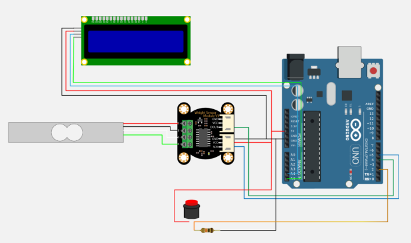

El presente proyecto tiene como metodología varias fases para de esta manera llevar a cabo un seguimiento en cada momento las cuales las definimos como:
1. Fase de investigación
2. Simulación
3. Implementación
Para el presente trabajo cada fase se llevará a cabo en cada entrega para de esta manera realizar un control, seguimiento y mejoramiento continuo del tema expuesto en la justificación, esta metodología tendrá como fin implementar un mecanismo o dispositivo dispensador de alimento para mascotas la metodología planteada buscará que el desarrollo del proyecto sea lo más eficiente y al menor costo, en tiempo, dinero y esfuerzo sin dejar de lado los objetivos planteados al inicio del documento.
Esta fase es la presentada en la entrega 1 de donde estará reflejado todo los antecedentes y trabajos previos realizados en el área de internet de las cosas en relación a la problemática a la alimentación automatizada para mascotas. Cabe mencionar que el sistema deberá cumplir con lo indicad en la figura 1

Para el caso de este proyecto se tendrá en consideración un sistema de control abierto el cual tiene como característica que el control no recibe información sobre el comportamiento de la variable a controlar. Precisamente el dispensador tendrá un control discreto donde las señales digitales o binarias.
Esta fase es llevada a cabo en la entrega 2 y 3 Si bien la materia tiene como objetivo el uso de lógica computacional por medio de circuitos de digitales todo esto estará simulado por medio del Software "logisim-win-2.7.1" se deberá tener en cuenta un modelo matemático y cálculos con el objetivo de desarrollar un dispensador de comida automatizado para mascotas este deberá tener en tener en consideración los siguientes ítems:
a. Deberá indicar el nivel de alimento en cada momento como los es (nivel alto, nivel medio y nivel bajo).
b. Deberá indicar el nivel de calidad de agua en cada momento como lo es (nivel alto, nivel medio y nivel bajo).
c. El circuito electrónico estará alimentado por una fuente de corriente continua como lo es un adaptador de voltaje y una fuente de alimentación de respaldo como lo son pilas en caso de caída de luz en el lugar.
d. El prototipo deberá tener un contenedor para el alimento y otro deposito para el agua.
e. En esta fase están consideradas las pruebas necesarias para comprobar que el sistema sea funcional.
f. El Dispensador estará disponible para ser programado de manera personalizada ya que cada usuario de acuerdo a los hábitos alimenticios de sus mascotas o a la cantidad que usaran el dispositivo.
Esta implementación es llevada a cabo en la entrega 3 que de igual manera se presentaran de manera más concretas el modelo matemático, cálculos y simulaciones y como objetivo en este aparatado se evidenciará el circuito digital, así como la propuesta física del dispensador de alimento para mascotas y las siguientes figuras 3 y 4 son de referencia
Figura 2 Circuito digital